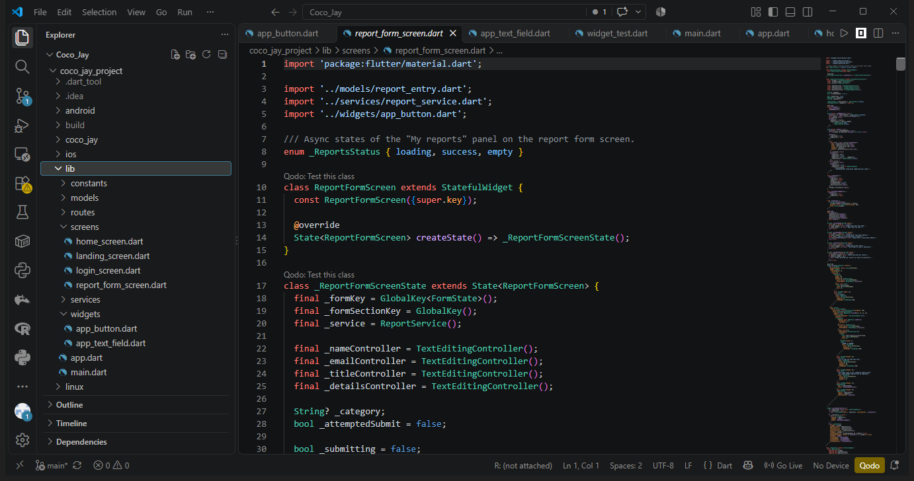
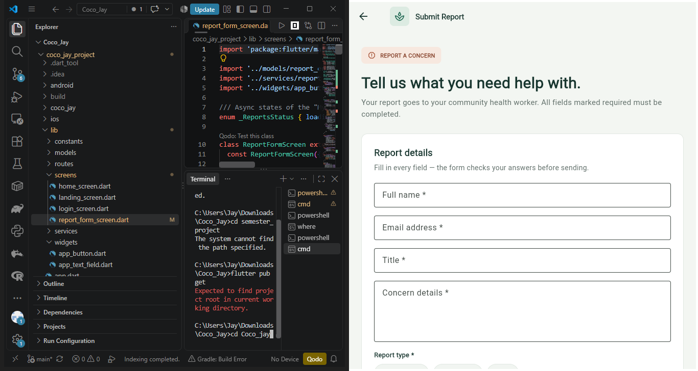
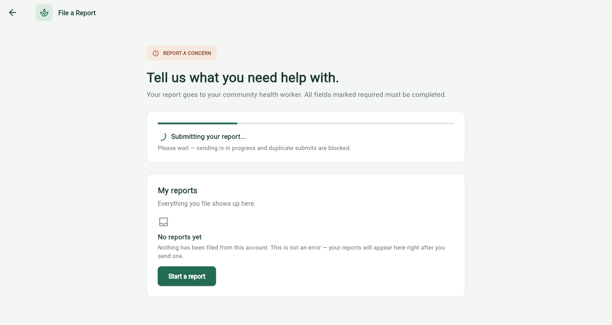
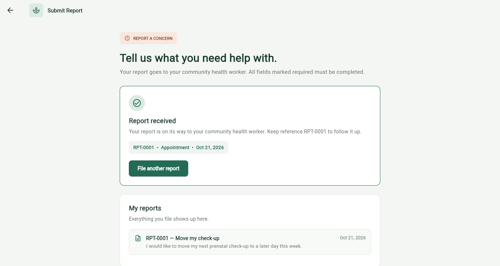
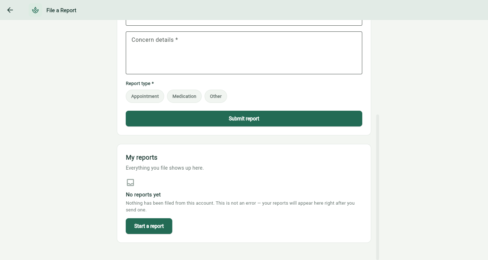
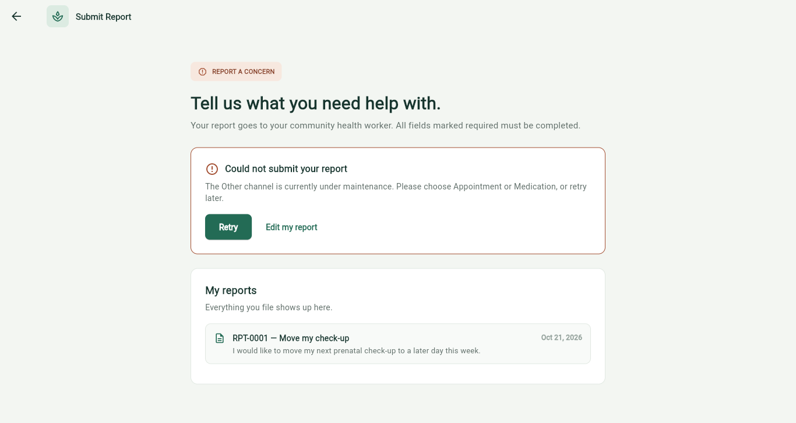

lib/screens/report_form_screen.dart),
opened from the File a Report button on the dashboard.
The screen contains a validated report form (full name, email, title, concern details, and a
report-type chip selector) backed by a simulated ReportService. Submitting the form
shows the four asynchronous UI states required by the activity:
Loading (full-page centered spinner with “Submitting report…”, matching the
reference design),
Success (“Report received” with reference RPT-0001),
Empty (“No reports yet” in the My-reports panel), and
Error (“Could not submit your report” when the Other channel is
under maintenance). The screen is registered on route /report and linked from a
File a Report button on the dashboard. We verified the behaviour with
flutter analyze (no issues) and flutter test (3/3 widget tests passing),
then captured the six screenshots below from the running release build and pushed everything
to GitHub.
| Repository | https://github.com/jayaguelo-spec/coco_jay |
| Branch | main |
| Feature commit | c676f73 — Add report form screen with validation and async UI states |
| Screenshots commit | 3dd2bd7 — Add report form activity screenshots (6 required states) |
| Redesign commit | 3777756 — Redesign Submit Report loading state to match reference; recapture screenshots |
| Project folder | coco_jay_project/ |
lib/ (models, services, screens including
report_form_screen.dart, routes, widgets) are visible.
report_form_screen.dart in VS Code
on the left, and the same report screen running in the browser on the right.



